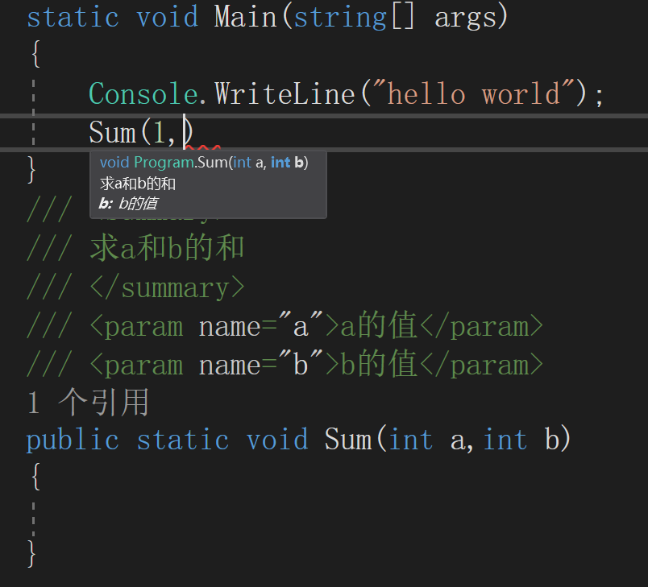

第九章 良构类型
- object类的重写。
- 操作符重载。
- 引用程序集。
- 命名空间。
- XML注释，可以在调用函数时解释这个函数的作用以及参数作用。
 - 垃圾回收（GC）
- 只回收堆上的内存。
- .NET GC:
- 采用mark-and-compact算法。
- 遍历每个根引用并递归所有根引用指向的对象，创建一个所有可达对象的图。
- 将这些对象紧挨着放在一起，直接覆盖不可访问的对象。
- GC期间所有托管线程暂停。
- 支持“代“的概念，以更快的频率尝试清除新生对象。
- 弱引用。
- 终结器：
- 在对象最后一次使用之后，进程正常结束之前调用。
- 定义方法：在类似构造器的前面加~
1
2
3
4
5
6
7
8
9Class Person(){
public Person(string name){
}
~Person(){
}
} - 不可被显示调用，不可传参，不可增加访问修饰符。
- 主要负责释放数据库连接、文件句柄等资源（不负责回收内存）。
- 不确定性终结。
- C#提供了确定性终结接口IDispose，通过using来防止异常。
第十章 异常处理
- 通过关键字throw来引发异常，异常类型应最好的说明异常发生的背景。
- 异常的捕获catch
- 一个try后可以跟很多个catch，以捕获不同种类的异常。
- catch块需要从最具体到最笼统的顺序排序。
- 只捕获能处理的异常
- 不要隐藏未完全处理的异常
- 未完待续。
第十一章 泛型
- 通过泛型以促进代码的复用。
- 泛型类的定义。
1
public class Stack<T>{} - 泛型类的构造器不要求类型参数。
- 泛型类可以有多个类型参数。
- 元数Tuple。
- 约束
- 通过where进行约束，where 参数 : 要求
- 类类型约束必须第一个出现
- 类类型约束不能指定为密封类，例如string。
- 类型约束可以约束值类型/引用类型。
- 父类的约束不会被子类隐式继承，需要显式指定。
- 泛型方法
- 编译器可根据传给方法的实参判断出类型。
- 避免使用表面上看是类型安全实则不是的泛型方法。
1
public void Max<T>(T first,T second){}
- 逆变与协变：未完待续。